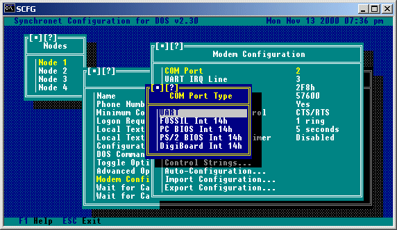
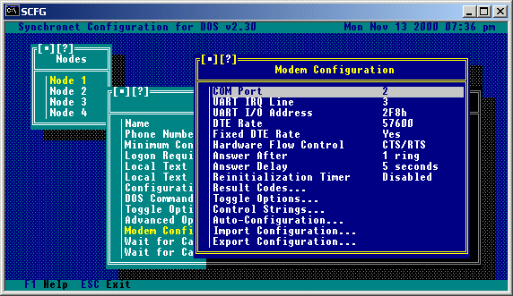
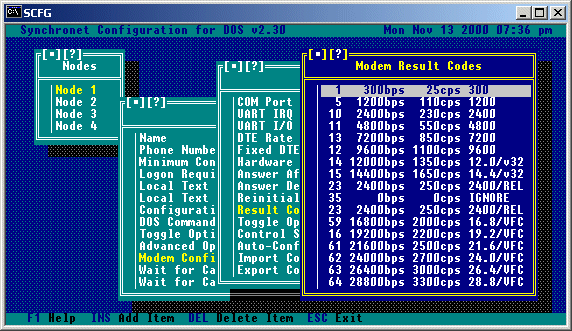
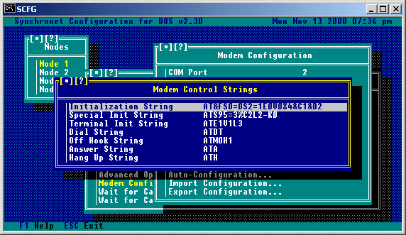
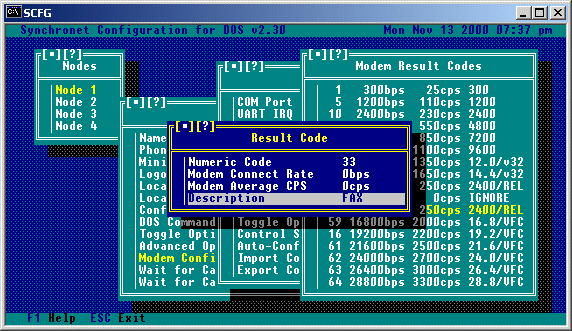
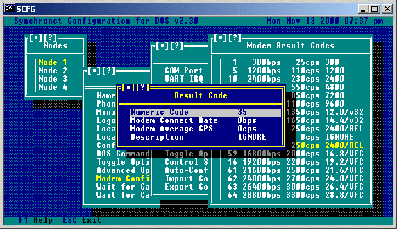

If you are using a shared IRQ or non-UART serial card, you should skip this section and go to the section on 'Using a Shared IRQ or Non-UART Serial Card'. If you are using an internal modem, note that all references to serial boards are the same as referring to an internal modem. Also note that most internal modems only have support for up to 4 different IRQ's and I/O addresses. Prior to installing your serial board, you should insure that neither the IRQ or the I/O address of any of the ports on the board are being used by any other devices in your system. Following is a list of IRQ's and I/O addresses which are commonly used by devices (those marked with a minus sign (-) may never be used by a serial board): Device IRQ I/O Address ---------------------- --- ----------- -Timer 0 040 - 05F -Keyboard Controller 1 060 - 06F *EGA/VGA Cards 2 Serial Port 2 3 2F8 - 2FF Serial Port 1 4 3F8 - 3FF Parallel Port 2 5 278 - 27F Floppy Drive 6 3F0 - 3F7 Parallel Port 1 7 378 - 37F -Real Time Clock 8 070 - 07F *Same as IRQ 2 9 -Co-processor 13 0F0 - 0F1 Fixed Disk Controller 14 1F0 - 1F8 *NOTE: IRQ's 2 and 9 may never be used at the SAME time. The following are suggested IRQ and I/O address settings for using up to 8 serial ports: Device IRQ I/O ---------------------- --- --- Serial Port 1 4 3F8 Serial Port 2 3 2F8 Serial Port 3 5 3E8 Serial Port 4 2 2E8 Serial Port 5 10 1F8 Serial Port 6 11 1E8 Serial Port 7 12 1A8 Serial Port 8 15 2A8 An additional 2 serial ports may be added using the following IRQ and I/O addresses: Device IRQ I/O ---------------------- --- --- Serial Port 9 7 400 Serial Port 10 14 408 Refer to the documentation provided by the manufacturer of your particular serial board for information on how to select IRQ and I/O addresses. After you have the ports on your serial board set up to fit your system requirements, you should write down the IRQ and I/O address information for future reference. Once you have determined the IRQ and I/O address that each node on your system will use, you must run the SCFG program and go to the Nodes->Node #->Modem Configuration and set the COM Port, UART IRQ Line, and UART I/O Address. Each node, when running on the same machine, should have a unique COM Port number. Notes on UARTs If you are using an external high-speed modem, you may require a buffered UART chip on your serial board for error-free transmissions. 8250 and 16450 UARTs DO NOT have buffers and are usually insufficient for high-speed modems. 16550AFN UARTs have a 16 byte FIFO UART which allows error-free transmissions with high-speed modems, particularly necessary when multi-tasking. Almost all internal high-speed modems come with a built-in 16550 UART.
If you are using a serial card which allows the use of shared IRQ's or has a non-standard UART interface, you will need to use a device driver to interface this card with Synchronet. Usually, such a driver would be included with the serial card from the manufacturer. Third party drivers are also available (such as COMM-DRV and X00). Synchronet supports three driver interfaces, all using Int 14h services. The supported driver interfaces are: FOSSIL (Fido/Opus/SEAdog Standard Interface Layer Version 5) Functions 0 through 6, and Fh Example FOSSIL drivers: X00, BNU, and COMM-DRV PC BIOS Functions 0 through 3 PS/2 BIOS Functions 1, 2, 4, and 5 DigiBoard DigiCHANNEL PC/Xi and PC/Xe DOS driver When setting the COM port in SCFG->Nodes->Node #->Modem Configuration, you will be prompted for the COM port type:
 If you are NOT using a special shared IRQ or non-UART serial card, then you should select "UART" and ignore the rest of this section. When selecting a non-UART COM port type, the "Channel" will automatically be set to the COM port number minus one. This is the zero-based COM port that will be used when communicating with the device driver (i.e. COM port 1 is channel 0, port 2 is channel 1, etc). You should NOT change the channel number unless you have a specific reason for doing so and understand exactly what you are doing. If you are using an Intelligent DigiBoard and are using the DigiBoard supplied device driver, then select "DigiBoard Int 14h". If the card you are using has a FOSSIL compatible device driver, this should be your preferred selection unless you wish to use baud rates greater than 38400, in which case a "PS/2 BIOS" compatible driver would be a better choice. The COMM-DRV/Universal Serial Communications Driver supports both FOSSIL and PS/2 BIOS interfaces. You should only select "PC BIOS" in a last case scenario (i.e. Your card's device driver does not support any other Int 14h interface). The PC BIOS interface does not support DTR, so if you use such a limited driver, you must set "Drop DTR to Hang Up" to "No" under "Modem Toggle Options", set the "Hang Up String" to "~~~\1\1\1~~~ATH" and change "S2=128" to "S2=1" in your "Initialization String". Int 14h drivers can also be used to communicate with non-UART serial devices such as Packet Assembler/Disassemblers (PADs), Network Redirectors, HAM Radio Packet Servers, etc.
If you are connecting a Synchronet node to another computer or terminal through a serial port WITHOUT the use of a modem, you must set SCFG->Nodes->Node # ->Modem Configuration->Toggle Options->Dumb Modem Connection to "Yes". This disables all modem commands (Init, Special Init, Answer, Off-hook, etc.) and causes Synchronet to only log a user on when the DCD serial line is raised. If your serial connection or terminal does not support the correct use of the DCD line, then you must run SBBS with the 'D' command line switch to force Synchronet to assume that DCD is always high. If this is the case, then there is no way to "hang up" on the BBS.
Now that you've set up your serial card, the easiest way to finish setting up the rest of the options for your modem is to run the SCFG program and go to the Nodes->Node #->Modem Configuration->Auto-Configuration, and select your modem model from the list of available choices. If your modem is not listed, you may select Generic 2400 for unlisted 2400bps Hayes compatible modems, Generic 9600, Generic 14400, or Generic 28800 for unlisted high speed modems. You may also import .MDM configuration files (located in your control directory) if you receive an updated or new version of a configuration file for your modem from Digital Dynamics or a third party. Following is a list of remaining options and a brief description of each for those of you that wish to manually alter the modem settings. UART (DTE) Rate is the data transfer rate between your computer and your modem, for non-data-compressing, non-high-speed modems, you should set this to your modem's highest DCE rate (e.g. a 2400bps modem should use a 2400bps DTE rate). If you have a data-compressing or high-speed modem, this value should be set to the highest DTE rate your modem supports (consult your modem manual). If you plan on using a FOSSIL driver for any external programs or doors, the DTE rate you set for your FOSSIL driver should be the same number you use for this option. Hardware Flow Control should be set to Transmit and Receive (Both) if your modem supports CTS/RTS hardware flow control (usually data-compressing or high-speed modems). Answer delay is the number of seconds to pause after a connection is established and before the terminal detection string is sent. It is suggested that this delay be set to a minimum of 5 seconds to allow for accurate terminal type detection. If the callers on your BBS are experiencing inaccurate terminal type detection, you may want to increase this number. Answer after (# rings) is the number of rings the bbs should wait for before answering the phone, the minimum is 1 ring. Reinitialization Timer is used to automatically reinitialize the modem periodically to make sure it is functioning correctly. If you find that your modem works most of the time, but occasionally will not answer the phone or functions incorrectly, you may wish to use this feature. Setting this value to 0 will disable periodic modem reinitialization. Example (for Generic 28.8k Modem on COM 2):

Result Codes is a list of numeric result codes (connect codes) supported by your modem. If you have set "Use Verbal Result Codes" to 'Yes' in your the SCFG modem toggle options for this node, this list is not used. You would use this list to add result codes that your modem supports, but are not currently in the list or to remove codes that are in the list but are not supported by your modem. For each result code, the actual numeric code, the DCE (connect) rate, estimated file transfer CPS, and an 8 character description of the connection type are stored. A complete list of result codes supported by your modem should be given in your modem manual. Here is an example of what the result code list would look like for a Generic 28.8k modem:

Selecting result code 15 from this menu would result in a sub-menu as follows:
If "FAX" is used for the result code description, Synchronet will exit with an error level of 100 when this result code is returned. This feature is used for FAX/Modems that can auto-detect FAX and DATA calls and return a numeric result code for FAX connections. If a different error level is preferred, use "EXIT nnn" (where nnn is a numeric value) for the description. If a verbal "FAX" or "+FCON" result code is returned, Synchronet automatically exits with an error level of 100 (see FAX/Modem setup later in this chapter). If your modem returns any result codes PRIOR to the actual connection result code (and this behavior cannot be disabled), then add these result codes to the result code list and enter "IGNORE" for the result description, thus causing Synchronet to ignore this result code and wait for another result code to determine the actual connection type. This step is only necessary for modems that insist on returning multiple result codes during a connection.
Selecting this option gives a menu of available modem toggle options:
Caller Identification: This is used for toggling the ability to use Caller-ID. Consult the section on caller identification for more information. Dumb Modem Connection: This option should be set to 'Yes' if you are using a dumb (null) modem cable to connect a computer to your BBS. Drop DTR to Hang Up: This is normally set to 'Yes', but some modems do not support the dropping of DTR to hang up the modem. If your modem is one of those, you should toggle this option to 'No'. Use Verbal Result Codes: This option should be set to 'Yes' for the easiest configuration of your modem. When this option is set to 'Yes', SBBS will automatically parse the CONNECT message received by the modem to determine the connect (DCE) rate and estimated CPS of the call. If "ARQ", "V42", "LAPM", "MNP", or "REL" are contained in the connect string, hardware error correction is assumed to be in effect and the estimated CPS rate is increased appropriately. Setting this option to 'Yes' has the added advantage of allowing DCE rates above 64000. Result codes not recognized as CONNECT messages (e.g. PROTOCOL, CARRIER, etc) are ignored. Result codes with "FAX" or "+FCO" cause SBBS to exit with an error level of 100 (for the execution of FAX receive software). Allow Unknown Result Codes: If "Use Verbal Result Codes" is set to 'No', then numeric result codes returned by the modem are then looked up in the configured result code list. If the result code is not found and the "Allow Unknown Result Codes" option is set to 'No', the call is immediately disconnected and an error message is logged for the sysop's attention. If the result code is not found and the "Allow Unknown Result Codes" option is set to 'Yes', then the connection information (DCE rate, estimated CPS rate, etc) is taken from the last configured result code and an error message is still logged for the sysop's attention.
Modem Control Strings are the strings which are sent to your modem at various times during BBS operation. Normally the default strings are sufficient for proper operation, but occasionally you may wish to modify one or more of these settings.

Initialization String is the basic modem initialization for Synchronet. You
should not modify this unless you are unhappy with any of the settings and are
familiar enough with the AT command set to understand what each command does.
Placing a tilde '~' anywhere in this string will produce a 500 millisecond
(half second) pause. Synchronet requires that the modem NOT echo characters
back and return numeric result codes. So "E0" and "V0" must be included
in the init string. Since Synchronet manually detects incoming calls from
the modem, the modem's auto-detect feature must be disabled with "S0=0". If
you do not want to hear the connection progress sounds, add "M0" to the end
of your modem initialization string to disable the modem's speaker.
Special Init String is where additional initialization commands are placed for
specific modem types, usually error-correcting, data-compressing, or high-speed
modems.
Terminal Init String is the initialization string sent to the modem when you
enter Synchronet's terminal mode ('T' from the waiting for call screen).
Dial String is the command sent to the modem for making outbound calls.
Currently only used by the Synchronet Callback Verifier.
Off Hook String is the command sent to the modem to take the phone off-hook
(busy).
Answer String is the command sent to the modem when a ring is detected by
Synchronet.
Hang Up String is the command sent to the modem to hang up the phone and is
only used if Drop DTR To Hang Up modem toggle option is set to No.
The auto-configuration contains a very long list of modem types. Using this list is the EASIEST way to configure your modem to work with Synchronet. All you need to do is select your modem from this list and most everything will be configured for you. If you do not see your modem in this list, you can normally select a 'Generic' model from the list. If someone later creates an .MDM configuration file specifically for your modem, you can use this configuration file simply copying the .MDM file into your control directory and then selecting the 'Import Configuration' option from the menu and typing in the name of the .MDM file. If you create a new configuration you would like to make available to people, you can export the configuration information into an .MDM file by selecting the 'Export Configuration' option from the menu.
If your modem supports one of the Caller-ID formats listed below and you have Caller-ID service enabled on your phone line, you can have Synchronet log Caller-ID information and disallow specific numbers. First, add the appropriate commands to SCFG->Nodes->Node #->Modem Configuration->Special Init String to enable Caller-ID on your modem (see your modem's manual for details). Then set SCFG->Nodes->Node #->Modem Configuration->Toggle Options->Caller Identification to "Yes". If you are using a Front-End (e.g. FrontDoor) on your BBS, the CID information can be passed to Synchronet on the SBBS command line with the 'Z' command line switch (e.g. sbbs c14400 z01-09_11:15_7145295313). The Caller-ID information must be ONE string with no spaces. The user's phone number will be placed in the user's note field for your records and logged for each call in the system log. If you wish to disallow access for a specific number, create the file CID.CAN in your TEXT directory and enter one phone number per line to disallow that number. If you want a message to be displayed to the user who calls with a disallowed number, create the message file BADCID.MSG in your TEXT directory. Supported formats: Single Line: MM-DD HH:MM Number Three Line: TIME: CALLER NUMBER: CALLER NAME: Four Line: DATE = TIME = NMBR = NAME =
In order for Synchronet to be able to receive incoming FAXes, there are a few requirements that must be met, these are: 1) Your modem MUST be able to return either a verbal or numeric FAX result code (verbal results must contain "FAX" or "+FCO"). 2) Your modem MUST be able to auto-detect FAX and DATA calls. 3) You MUST have a command line receive FAX program that works with your FAX modem. If all of the above requirements can be met, then you will need to modify the SBBS.BAT/SBBS.CMD file in the directory of the node(s) to be used for receiving incoming FAXes as follows (using a ZyXEL FAX/Modem setup on COM 2 as an example): -----------------------------------[ Begin ]----------------------------------- @echo off :top ..\exec\sbbs %1 %2 %3 %4 %5 if not errorlevel 100 goto end c: cd \zfax rcvfax 2 /p:1 echo Incoming FAX! >> c:\sbbs\data\msgs\0001.msg c: cd \sbbs\node1 goto top :end ------------------------------------[ End ]------------------------------------ Change the 'c:' on the 5th line to the drive letter where your receive FAX program resides. Change the 'cd \zfax' on the 6th line to the name of the directory where your receive FAX program resides. Change the 'rcvfax 2 /p:1' on the 7th line to match the name and command line options of the receive FAX program for your modem. Change the 'c:\sbbs\data' portion of the 8th line to match the location of your Synchronet data directory. Change the 'c:' on the 9th line to the drive letter where you have Synchronet installed. Change the 'cd \sbbs\node1' on the 10th line to match the directory of the node(s) that will be set up for receiving FAXes. Check your modem manual to find out if your modem responds with a verbal "FAX" (e.g. ZyXEL) or "+FCO" (e.g. Practical Peripherals) result code or a numeric FAX result code (e.g. Hayes). If a numeric result code is returned, then run SCFG from your node directory and go to Nodes->Node #->Modem Configuration->Result Codes and add the numeric result code your modem returns for a FAX connect and enter "FAX" for the result description. If your modem returns a numeric "DATA" result code when in auto-detection mode (e.g. Hayes) then add this result code to your result code list in SCFG and enter "IGNORE" for the result description. Example numeric FAX result code (using Hayes Optima 288):
 Example numeric DATA result code (using Hayes Optima 288):
 If there are any commands needed to enable FAX auto-detection, add these commands to the end of your Special Init string in SCFG->Nodes->Node #->Modem Configuration. If there is an auto-configuration entry listed for your modem with FAX enabled, this step is not necessary. Now you are ready to receive FAXes! When your modem returns a FAX result code to Synchronet, the receive FAX program specified in this batch file will be executed. FAXes will be placed into the directory that your FAX program uses for received FAXes. FAXes CANNOT be sent to specific users on the BBS, this option is only for the convenience of being able to receive FAXes without the need of a dedicated FAX machine and phone line. However, the ability to allow users to FAX on demand or to upload files to be sent out as FAXes can be accomplished by using one of the add-ons (Domain FAX) from Domain Entertainment.
Copyright © 2000 by Rob Swindell
Synchronet BBS Software (Synchronet)
Version 3 is comprised of several documentation,
library, executable, and source code
files, all of which are covered by the
GNU General Public License with the exception of the following portions
covered by
the GNU Lesser General Public License:
SMBLIB and XSDK.
Synchronet Version 2 (for DOS and OS/2) and its source code was released to the
Public Domain by Digital Dynamics
in 1997 and remains Public Domain software today.
Synchronet Version 3 is not Public Domain software.
Rob Swindell
PO Box 501
Yorba Linda, CA 92885
http://www.synchro.net
For the complete Copyright Information please read the Copyright Documentation .